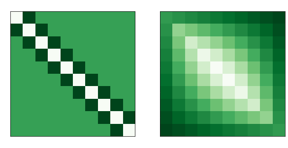
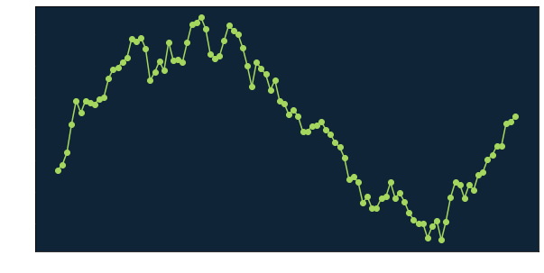
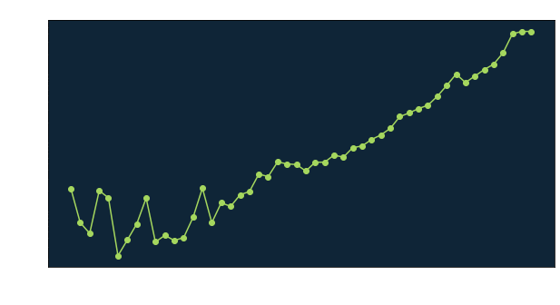
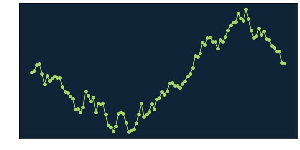
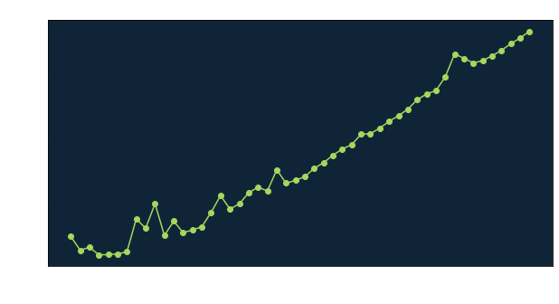
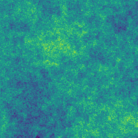

Let’s see if we can sample this directly using a hierarchical representation.
Published
June 15, 2022
The goal of this post is to write some code that can generate direct1 samples from a Cauchy Markov random field (CMRF) [1][2] on a 2D regular lattice. A more general Markov Random Field (MRF) is just a multivariate probability distribution possessing a special conditional-independence property amongst the components. This property permits the use of efficient numerical methods developed to exploit this property. CMRFs are cousins of the better-known Gaussian Markov Random Fields (GMRFs), which are themselves special cases of Gaussian fields (a.k.a. Gaussian processes).
Our main reference for this post will be [3] which is a comprehensive text on the subject. Our plan of attack is to:
Sample from a 1D GMRF,
Build off of this to sample a 1D CMRF using a hierarchical representation of the Cauchy distribution,
Build off of this to sample from a 2D GMRF and CMRF.
Gaussian Markov Random Fields
A GMRF can be thought of as a multivariate random variable
\[
X \sim \mathcal{N}\left( \mu, Q^{-1} \right)
\]
with mean vector \(\mu\) and precision \(Q\), where \(Q\) is a sparse banded matrix (or is under some re-ordering of the components). This is just one view, as there are many other perspectives/interpretations (see [3]). Here the precision \(Q\) is the inverse of the covariance matrix, \(Q = \Sigma^{-1}\). The reason we care about the sparsity of \(Q\) rather than that of the covariance \(\Sigma\) is because the precision matrix encodes the conditional independence structure of the field, whereas the covariance matrix will be dense even if the precision is sparse. The sparsity of \(Q\) is what allows us to do efficient computations with the corresponding GMRF and avoid the “Big \(N\) Problem” that more general Gaussian fields suffer from.
import numpy as npimport scipy.sparse as spimport matplotlib.pyplot as pltplt.rcParams['axes.facecolor'] ='#0F2537'plt.rcParams['text.color'] ='white'plt.rcParams['axes.labelcolor'] ='white'plt.rcParams['xtick.color'] ='white'plt.rcParams['ytick.color'] ='white'# Build precision and covarianceprec_mat =2*sp.eye(10)prec_mat.setdiag(-1,k=-1)prec_mat.setdiag(-1,k=1)prec_mat = prec_mat.toarray()cov_mat = np.linalg.inv(prec_mat)fig, axs = plt.subplots(1, 2, figsize=(10,5))axs[0].imshow(prec_mat, cmap='Greens_r')axs[0].set_title("Precision")axs[1].imshow(cov_mat, cmap='Greens_r')axs[1].set_title("Covariance")plt.show()

Figure 1: A sparse precision matrix will generally invert to a dense covariance matrix.
The unnormalized density function for the GMRF is given as
\[
\pi(x) \propto \exp\left[ - \frac{1}{2} \left( x - \mu \right)^T Q \left( x - \mu \right) \right].
\]
Sampling a 1D GMRF
The GMRF we will consider is that with \(\mu = 0\) and precision \(Q = D^T D\), where
is an \(N \times N\) matrix. Intuitively, this precision corresponds to a Gaussian random-walk on the line whose increments and initial value have distribution \(\Delta x_i, x_0 \sim \mathcal{N}(0,1)\). One way to sample this GMRF is to use the “covariance method”, which is to compute the Cholesky factorization \(\Sigma = L L^T\) and then get a sample via
\[
x = \mu + L z
\]
where \(z \sim \mathcal{N}(0, I)\). Let’s try this with \(N = 100\) points.
N =100# Build D matrixd_mat = sp.eye(N)d_mat.setdiag(-1, k=-1)d_mat = sp.csr_matrix(d_mat)# Build precision and covarianceprec_mat = d_mat.T @ d_matprec_mat = prec_mat.toarray()cov_mat = np.linalg.inv(prec_mat)# Get Cholesky factor of covariancechol_fac = np.linalg.cholesky(cov_mat)# Compute samplenp.random.seed(0)z = np.random.normal(size=N)sample_cov_method = chol_fac @ zfig, axs = plt.subplots(figsize=(10,5))axs.plot(sample_cov_method, "o-", color="#A5D75E")#axs.set_title("A single draw from the random walk on the line")plt.show()

Figure 2: A single draw from a 1D GMRF, using the covariance method.
Easy enough. However, a central concern when working with GMRFs is how well the method scales with the dimension \(N\). Now let’s do a naive experiment where we time how long it takes to compute a single sample as we increase \(N\).
import timefrom sklearn import datasets, linear_modelns = np.logspace(2.5, 4, num=50)ns = np.rint(ns).astype(np.int32)def draw_single_sample_cov_method(n):"""Draws a single sample from the RW model of size n, using the covariance method. """# Build D matrix d_mat = sp.eye(n) d_mat.setdiag(-1,k=-1)# Build precision and covariance prec_mat = d_mat.T @ d_mat prec_mat = prec_mat.toarray() cov_mat = np.linalg.inv(prec_mat)# Draw a sample np.random.seed(0) chol_fac = np.linalg.cholesky(cov_mat) z = np.random.normal(size=n) sample = chol_fac @ zreturnNonetimes = []for n in ns: start = time.time() draw_single_sample_cov_method(n) end = time.time() elapsed = end - start times.append(elapsed)regr = linear_model.LinearRegression()regr.fit(np.log(ns)[:, None], np.log(times)[:, None])slope = regr.coef_[0][0]fig, axs = plt.subplots(figsize=(10,5))axs.loglog(ns, times, "o-", color="#A5D75E")axs.set_xlabel("N")axs.set_ylabel("Time (milliseconds)")axs.set_title(f"Slope = {slope:.1f}")plt.show()

Figure 3: Time to generate a single sample vs. number of points N, using the covariance method.
Generating a sample appears to cost \(\mathcal{O}(N^\alpha)\) with \(\alpha \approx 2.4\). The bottleneck in this method comes from the matrix inverse and Cholesky factorizations, which since the covariance is dense we should each expect to cost \(\mathcal{O}(N^3)\) – for whatever reason it seems we manage to do better than this though.
We can do better than this by instead using the “precision method” that takes advantage of the sparsity of \(Q\). Inserting the Cholesky factorization \(Q = L L ^T\) into the previous covariance method, the precision method is to compute a sample via
\[
x = \mu + L^{-T} z
\]
with \(z \sim \mathcal{N}(0,I)\). However, it will be important how we compute the Cholesky factorization. If we just use np.linalg.cholesky which handles dense matrices, we shouldn’t expect to do any better. A nice property of sparse matrices is that if a matrix has a lower bandwidth of \(p\), then its lower Cholesky factor \(L\) also has bandwidth \(p\). There are specific algorithms that have been designed to take advantage of this fact, such as those implemented in sksparse.cholmod which we will use.
from sksparse.cholmod import choleskyN =100# Build D matrixd_mat = sp.eye(N)d_mat.setdiag(-1, k=-1)d_mat = sp.csr_matrix(d_mat)# Build precisionprec_mat = d_mat.T @ d_matprec_mat = sp.csc_matrix(prec_mat)# Compute (sparse) cholesky factorization# The natural ordering method doesn't permute the nodes (our precision is already sparse)factor = cholesky(prec_mat, ordering_method='natural')# Solve L^T x = znp.random.seed(0)z = np.random.normal(size=N)sample_prec_method = factor.solve_Lt(z, use_LDLt_decomposition=False)fig, axs = plt.subplots(figsize=(10,5))axs.plot(sample_prec_method, "o-", color="#A5D75E")#axs.set_title("A single draw from the random walk on the line")plt.show()

Figure 4: A single draw from a 1D GMRF, using the precision method.
import timefrom sklearn import datasets, linear_modelns = np.logspace(2.5, 7, num=50)ns = np.rint(ns).astype(np.int32)def draw_single_sample_prec_method(n):"""Draws a single sample from the RW model of size n, using the covariance method. """ d_mat = sp.eye(n) d_mat.setdiag(-1, k=-1) d_mat = sp.csr_matrix(d_mat) prec_mat = d_mat.T @ d_mat prec_mat = sp.csc_matrix(prec_mat) factor = cholesky(prec_mat, ordering_method='natural') np.random.seed(0) z = np.random.normal(size=n) sample = factor.solve_Lt(z, use_LDLt_decomposition=False)returnNonetimes = []for n in ns: start = time.time() draw_single_sample_prec_method(n) end = time.time() elapsed = end - start times.append(elapsed)regr = linear_model.LinearRegression()regr.fit(np.log(ns)[:, None], np.log(times)[:, None])slope = regr.coef_[0][0]fig, axs = plt.subplots(figsize=(10,5))axs.loglog(ns, times, "o-", color="#A5D75E")axs.set_xlabel("N")axs.set_ylabel("Time (milliseconds)")axs.set_title(f"Slope = {slope:.1f}")plt.show()

Figure 5: Time to generate a single sample vs. number of points N, using the precision method.
Note that the precision method is significantly faster and has cost about \(\mathcal{O}(N)\), as it leverages a sparse Cholesky factorization and a sparse linear system solver. For the rest of this post, we will use the precision method for drawing samples.
Hierarchical representation of the Cauchy distribution
In order to sample from a CMRF, we will use a scale mixture of normal representation for the Cauchy distribution2. Suppose we wish to sample
\[
x \sim \text{Cauchy}(1).
\]
where \(s = 1\) is the scale parameter of the Cauchy distribution. We can achieve this using the hierarchical representation
with the choice \(\nu=1\). For general \(\nu\), this gives us \(x \sim \text{Student-}t_\nu\) for which the Cauchy distribution is a special case. With this sampling scheme, we have that the marginal density for \(x\),
is the density for a \(\text{Cauchy}(1)\)-distributed random variable. If we want to control the scale parameter of the Cauchy distribution, we can modify this as \[\begin{align*}
\lambda &\sim \text{Gamma}(1/2,s^2/2) \\
x \, | \, \lambda &\sim \mathcal{N}(0, \lambda^{-1})
\end{align*}\]
2. Sampling a 1D CMRF
Now let’s put this hierarchical representation to work. To obtain a CMRF from a GMRF, we will sample \[\begin{align*}
\lambda_1, \ldots, \lambda_N &\sim \text{Gamma}(1/2, s^2/2) \\
H &= \text{diag}(\lambda_1, \ldots, \lambda_N) \\
x \, | \, H &\sim \mathcal{N}\left(\mu, Q^{-1} = \left( D^T H D \right)^{-1} \right)
\end{align*}\] where \(H\) is a diagonal matrix collecting the hyper-parameters and \(D\) is the same differencing matrix as before. The marginal density for \(x\), \[\begin{equation*}
\pi(x) = \int \pi(x | \lambda_1, \ldots, \lambda_N) \pi(\lambda_1, \ldots, \lambda_N) \, d\lambda_1 \, \ldots \, d\lambda_N
\end{equation*}\] is the density function for a CMRF.
from sksparse.cholmod import choleskyfrom scipy.stats import gammaN =100s =1# Build D matrixd_mat = sp.eye(N)d_mat.setdiag(-1, k=-1)d_mat = sp.csr_matrix(d_mat)# Sample the hyperparametersnp.random.seed(0)h_mat = gamma.rvs(1/2, scale=(s**2)/2, size=N)h_mat = sp.diags(h_mat)# Build precisionprec_mat = d_mat.T @ h_mat @ d_matprec_mat = sp.csc_matrix(prec_mat)# Compute (sparse) cholesky factorization# The natural ordering method doesn't permute the nodes (our precision is already sparse)factor = cholesky(prec_mat, ordering_method='natural')# Solve L^T x = zz = np.random.normal(size=N)sample_prec_method = factor.solve_Lt(z, use_LDLt_decomposition=False)fig, axs = plt.subplots(figsize=(10,5))axs.plot(sample_prec_method, "o-", color="#A5D75E")#axs.set_title("A single draw from the random walk on the line")plt.show()
Figure 7: Precision and covariance matrices corresponding to the sample in Figure 6
Compared to our sample from a GMRF from earlier, the sample from the CMRF has infrequent massive jumps. This makes sense, since our CMRF is modeling increments as being Cauchy-distributed and the Cauchy distribution has infinite variance. Let’s look at some more samples from each.
Figure 8: 10 samples each from our GMRF/CMRF. Each row uses the same draw \(z \sim \mathcal{N}(0,I)\).
3. Sampling a 2D GMRF/CMRF
Making the jump to a 2D GMRF is not too difficult. Whereas in our earlier examples for a 1D random walk with \(N\) points our precision matrix \(Q\) was \(N \times N\), in 2D on an \(M \times N\) grid our precision matrix will need to be an \(M^2 \times N^2\) matrix. The 2D GMRF we will consider is an “anisotropic difference prior” that is an extension of our 1D GMRF from earlier, with \(\mu = 0\) and precision \[\begin{equation*}
Q = F^T F.
\end{equation*}\] Here \[\begin{equation*}
F = \begin{bmatrix}
D_1 \\
D_2
\end{bmatrix},
\end{equation*}\] where the \(D_{1/2}\) are given by \[\begin{align*}
D_1 &= I_N \otimes D, \\
D_2 &= D \otimes I_M,
\end{align*}\] and \(D\) is the same matrix from our 1D example.
Figure 10: A sample of our GMRF on a \(200 \times 200\) lattice.
Let’s also make a “movie” for a sequence of samples.
from moviepy.editor import ImageSequenceClipn_samples =10samples = np.zeros((n_samples, M, N))# Draw samplesnp.random.seed(0)for j inrange(n_samples): z = np.random.normal(size=(M,N)).flatten() samples[j,:,:] = factor.solve_Lt(z, use_LDLt_decomposition=False).reshape((M,N))fps =int(0.1*n_samples)min_val = np.amin(samples)max_val = np.amax(samples)samples -= min_valsamples /= max_val - min_valcolored_samples = np.zeros((n_samples, M, N, 4))cmap = plt.get_cmap()for j inrange(n_samples):#print(cmap(samples[j,:,:])) colored_samples[j,:,:,:] = cmap(samples[j,:,:])colored_samples *=255clip = ImageSequenceClip(list(colored_samples), fps=fps)clip.write_gif('gmrf_samples.gif', fps=fps, verbose=False, logger=None)

Now that we can sample from a 2D GMRF, it is straightforward to add in hyper-parameters that turn our GMRF into a CMRF. To do this, we sample \[\begin{align*}
\lambda_1, \ldots, \lambda_{2N^2} &\sim \text{Gamma}(1/2, s^2/2) \\
H \, | \, \lambda_1, \ldots, \lambda_{2N^2} &= \text{diag}(\lambda_1, \ldots, \lambda_{2N^2}) \\
x \, | \, H &\sim \mathcal{N}\left(\mu, Q^{-1} = \left( F^T H F \right)^{-1} \right).
\end{align*}\] Let’s try sampling this.
So we have achieved our goal. In a future post, we will put this to work as a prior in an inverse problem.
Bonus: some extra MRFs
While we used a scale mixture of normal representation for the Cauchy distribution, we can also obtain other distributions as scale mixtures of normals. For example, we can simulate a MRF where the increments follow a Laplace distribution by sampling \[\begin{align*}
\beta_1, \ldots, \beta_{2N^2} &\sim \text{Exponential} \\
\lambda_i \, | \, \beta_i &= \frac{1}{2\beta_i} \\
H \, | \, \lambda_1, \ldots, \lambda_{2N^2} &= \text{diag}(\lambda_1, \ldots, \lambda_{2N^2}) \\
x \, | \, H &\sim \mathcal{N}\left(\mu, Q^{-1} = \left( F^T H F \right)^{-1} \right).
\end{align*}\]
Similarly, we can get a MRF increments with Horshoe-distributed [4] increments by sampling \[\begin{align*}
\beta_1, \ldots, \beta_{2N^2} &\sim \text{C}^+(0, 1) \\
\lambda_i \, | \, \beta_i, \tau &= \frac{1}{\beta_i^2 \tau^2} \\
H \, | \, \lambda_1, \ldots, \lambda_{2N^2} &= \text{diag}(\lambda_1, \ldots, \lambda_{2N^2}) \\
x \, | \, H &\sim \mathcal{N}\left(\mu, Q^{-1} = \left( F^T H F \right)^{-1} \right)
\end{align*}\] where \(\tau\) is some fixed hyper-hyper-parameter and \(C^+\) denotes the half-Cauchy distribution. Below are some movies of samples from a Laplace MRF and Horshoe MRF, respectively.